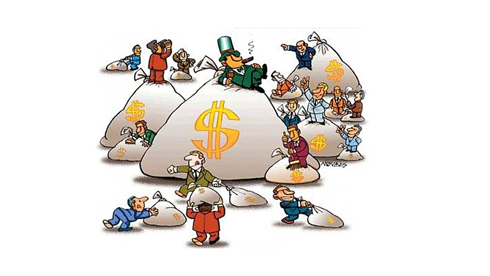

Principais Commodities e Vantagens de Investimentos

A Bovespa, agora conhecida como B3 (Brasil, Bolsa, Balcão), oferece uma ampla gama de commodities para investimentos. As principais commodities negociadas incluem:
- Soja: Uma das principais commodities agrícolas do Brasil, essencial para a economia devido à sua grande exportação.
- Petróleo: Vital para o setor energético e altamente valorizado no mercado global.
- Minério de Ferro: Crucial para a indústria siderúrgica e um dos principais produtos de exportação do Brasil.
Vantagens de investir em commodities:
- Diversificação: Ajuda a balancear riscos em uma carteira de investimentos.
- Proteção contra a inflação: Commodities tendem a valorizar em períodos inflacionários.
- Alta liquidez: Facilidade de compra e venda no mercado.
Tipos de Investidores e Ações para Investir
Investir na Bovespa é uma atividade acessível para diferentes perfis de investidores, que se classificam geralmente em três categorias:
- Investidor Conservador: Busca segurança e prefere investimentos de baixo risco como títulos públicos e CDBs. Este tipo de investidor prioriza a preservação do capital.
- Investidor Moderado: Equilibra segurança e retorno, investindo tanto em renda fixa quanto em renda variável. Este perfil busca um crescimento estável, mas com um pouco mais de risco.
- Investidor Agressivo: Está disposto a correr maiores riscos em busca de altos retornos, investindo principalmente em ações e outros ativos de renda variável. Este investidor aceita a volatilidade do mercado em troca de potencial de ganhos significativos.
Principais Ações Brasileiras
-
Petrobras (PETR4):
 Uma das maiores empresas de energia do Brasil, com uma presença significativa no setor de petróleo e gás.
Uma das maiores empresas de energia do Brasil, com uma presença significativa no setor de petróleo e gás.
-
Vale (VALE3):
 Uma das maiores empresas de mineração do mundo, com foco em minério de ferro, níquel e outros metais.
Uma das maiores empresas de mineração do mundo, com foco em minério de ferro, níquel e outros metais.
-
Banco do Brasil (BBAS3):
Um dos maiores bancos do Brasil, oferecendo uma variedade de serviços financeiros, incluindo empréstimos, financiamentos e investimentos.
Bolsa de Valores na Vida dos Brasileiros
A bolsa de valores tem se tornado cada vez mais presente na vida dos brasileiros, influenciada por diversos fatores:
- Facilidade de Acesso: Com o avanço da tecnologia, aplicativos e plataformas online tornaram o investimento na bolsa acessível para um maior número de pessoas.
- Educação Financeira: Cresceu significativamente o interesse e a educação financeira, com mais brasileiros aprendendo sobre investimentos e a importância de uma boa gestão financeira.
- Economia Nacional: A performance da Bovespa reflete diretamente no crescimento econômico do país, impactando desde grandes empresas até o cotidiano das famílias brasileiras.
Principais Moedas e Vantagens de Investimentos
Na Bovespa, também é possível investir em diferentes moedas, o que oferece diversificação e proteção cambial:
- Dólar Americano (USD): Considerado a principal moeda de reserva global, oferece estabilidade e é amplamente aceito em transações internacionais.
- Euro (EUR): Representa a economia da União Europeia, proporcionando diversificação geográfica aos investidores.
- Yuan Chinês (CNY): Reflete o crescimento robusto da economia chinesa, oferecendo oportunidades em mercados emergentes.
Investir em moedas estrangeiras pode oferecer vantagens como:
- Diversificação: Reduz os riscos associados à concentração em uma única moeda.
- Proteção Cambial: Ajuda a mitigar o impacto das flutuações cambiais na economia nacional.
Termos "Bolsa Fecha em Alta" e "Bolsa Fecha em Baixa"

Esses termos são comuns no mercado financeiro e têm significados específicos:
- Bolsa Fecha em Alta: Indica que os preços das ações, em média, subiram durante o dia de negociação, refletindo otimismo e confiança dos investidores.
- Bolsa Fecha em Baixa: Indica que os preços das ações, em média, caíram durante o dia de negociação, refletindo pessimismo ou incerteza entre os investidores.
Impactos na economia:
- Confiança dos Investidores: Uma bolsa em alta geralmente aumenta a confiança dos investidores, podendo estimular mais investimentos.
- Economia Real: Movimentos significativos na bolsa podem influenciar a economia real, afetando decisões de negócios e o consumo.
Relação da Bovespa com Outras Bolsas de Valores do Mundo
A Bovespa está interconectada com outras bolsas de valores ao redor do mundo, o que cria um ecossistema financeiro global:
- Interconexão Global: Os mercados financeiros estão interligados, de modo que eventos em uma parte do mundo podem influenciar mercados em outras regiões.
- Acordos e Parcerias: A B3 mantém acordos com diversas bolsas internacionais, facilitando o fluxo de capital e o investimento estrangeiro.
- Movimentação de Capitais: Investidores estrangeiros desempenham um papel crucial na Bovespa, trazendo liquidez e diversificação ao mercado.
Mecanismos e Processos de Funcionamento da Acumulação de Capital
A acumulação de capital na bolsa de valores segue processos estruturados que permitem o crescimento patrimonial dos investidores:
- Processo de Acumulação: Envolve o investimento inicial e o reinvestimento dos lucros obtidos, permitindo que os ganhos se acumulem ao longo do tempo.
- Funcionamento: Utiliza o conceito de juros compostos, onde os ganhos sobre os investimentos geram novos rendimentos, acelerando o crescimento do capital.
Tipos de Trabalho e Profissões Envolvidas
O mercado de investimentos envolve diversas profissões, cada uma desempenhando um papel crucial no funcionamento da bolsa de valores:
- Economista: Analisa dados econômicos e tendências de mercado para fornecer insights valiosos. Média salarial: R$ 8.000,00.
- Corretor de Investimentos: Atua na compra e venda de ativos para clientes, oferecendo assessoria financeira. Média salarial: R$ 5.000,00 + comissões.
- Analista Financeiro: Avalia e planeja investimentos, ajudando clientes a tomar decisões informadas. Média salarial: R$ 6.500,00.
Riscos no Mercado de Investimentos
Investir na bolsa de valores envolve certos riscos, que podem ser mitigados através de estratégias adequadas:
- Riscos de Mercado: Flutuações nos preços dos ativos devido a fatores econômicos e políticos.
- Risco de Liquidez: Dificuldade em vender um ativo sem afetar seu preço.
- Risco de Crédito: Possibilidade de inadimplência por parte de emissores de títulos.
Maneiras de mitigar riscos:
- Diversificação: Investir em uma variedade de ativos para espalhar o risco.
- Monitoramento Contínuo: Acompanhar constantemente os investimentos e ajustar a carteira conforme necessário.
- Análise e Planejamento: Realizar uma análise detalhada e ter um planejamento financeiro bem estruturado.